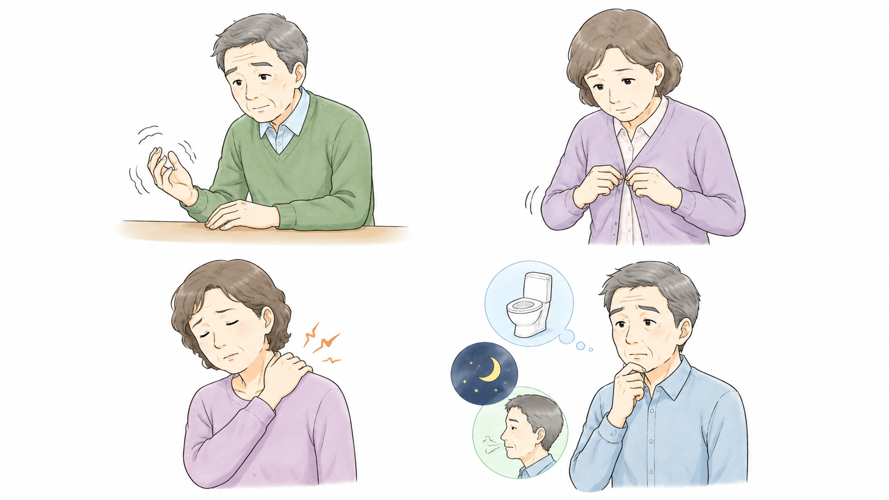
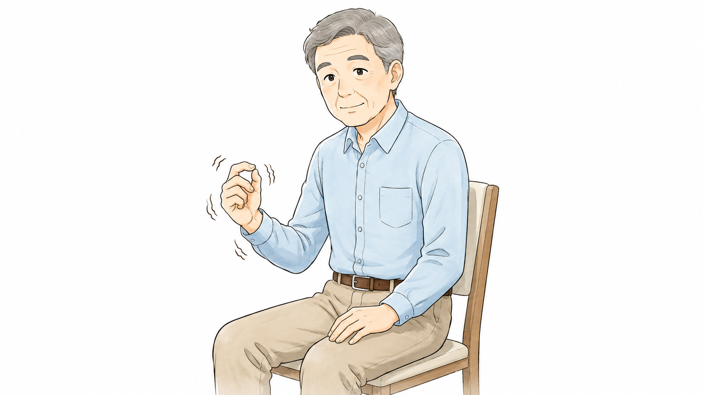
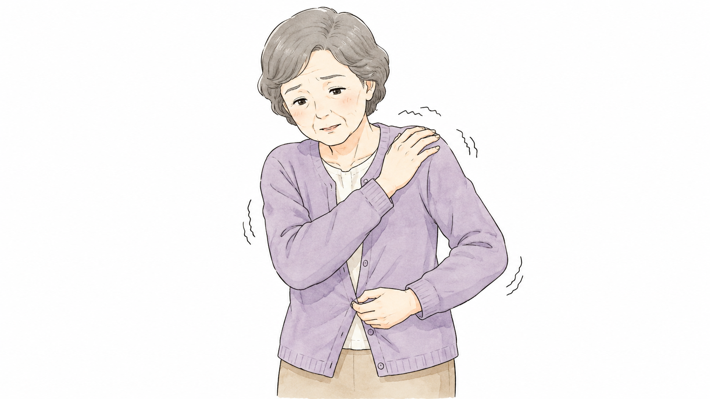
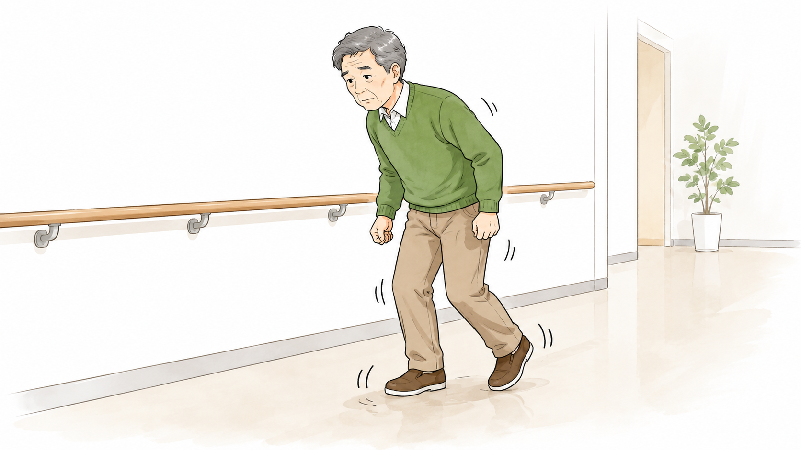
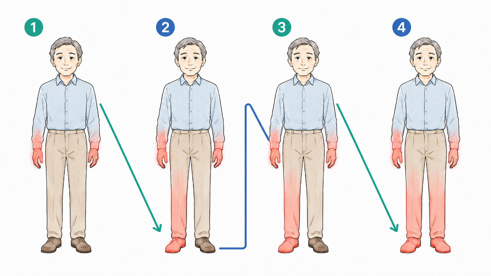
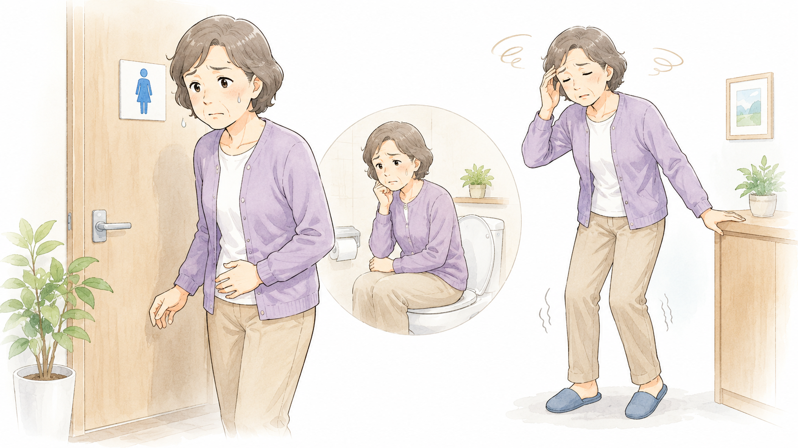
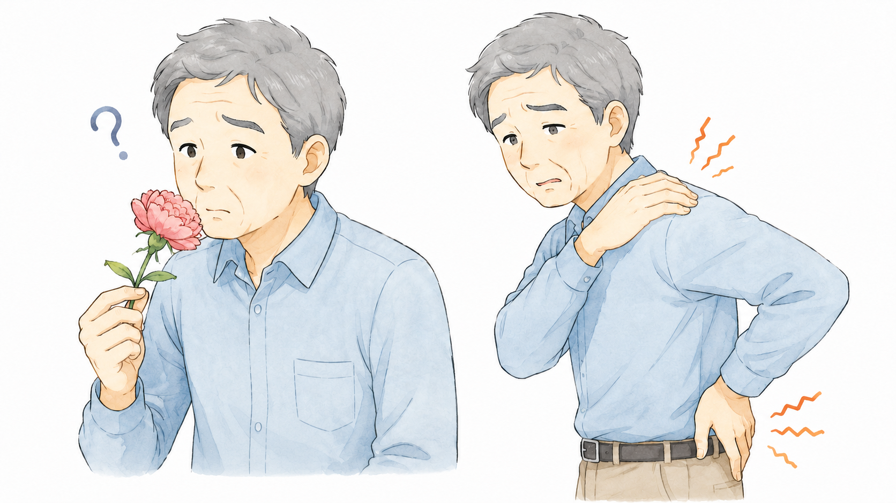
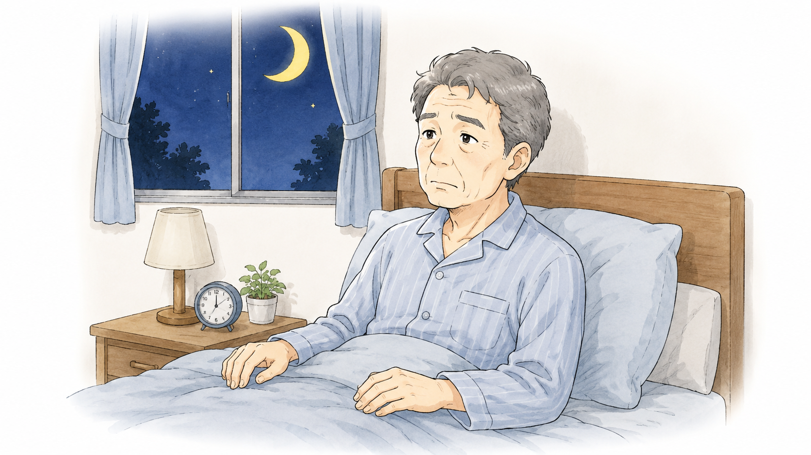
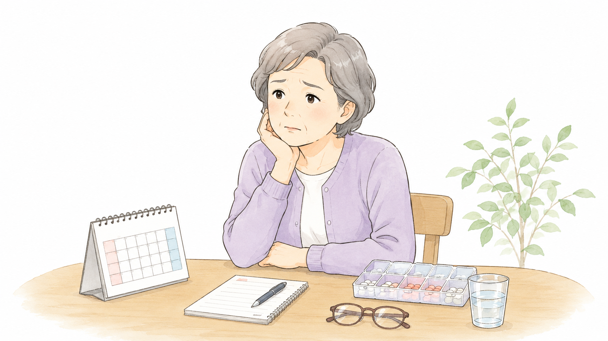

パーキンソン病の
症状の現れ方
パーキンソン病の症状の現れ方は個人によって大きく異なります。これは、病気の進行速度、最初に現れる症状、影響を受ける体の部位、さらには非運動症状の有無などが人それぞれ異なるためです。
症状の個人差の主なポイント
(1) 初期症状の違い

- 震え（静止時振戦）が最初に現れる人が多いが、震えのないタイプの人もいる。
- 動作が遅くなる（寡動）ことが最初に気になる場合もある。ほとんどのパーキンソン病患者さんは何らかの寡動症状を有しています。
- 筋肉のこわばり（筋強剛）が初期から目立つ人もいる。
- 非運動症状（便秘、嗅覚障害、うつ、不眠など）が最初に出ることもある。
(2) 運動症状の個人差
パーキンソン病の運動症状には個人差があり、大きく振戦優位型、寡動・筋固縮優位型、体軸症状優位型の3つに分けられます。
振戦優位型

このタイプでは、じっとしているときに手が震える「静止時振戦」が主な症状として現れます。特に手に症状が出やすく、動きの遅さや筋肉のこわばりは比較的軽いことが多いです。進行のスピードもゆっくりな傾向があります。振戦は、親指と人差し指をこするような「ピルローリング様振戦」と呼ばれる特徴的な動きを示すことがあります。
寡動・筋固縮優位型

このタイプでは、手足の動きが遅くなる「寡動」や、筋肉のこわばりが目立ちます。振戦はあまり見られず、特に手や足の動作がぎこちなくなり、日常生活の動作がしづらくなることが多いです。筋固縮は、腕や脚を動かしたときに抵抗を感じる「鉛管様固縮」や、ガクガクとした動きが見られる「歯車様固縮」として現れることがあります。このタイプは、振戦優位型に比べると進行は早い傾向で、後述の体軸症状が加わってくるとさらに早くなります。
体軸症状優位型

このタイプでは、姿勢の保ちにくさや歩行の障害が主な症状として現れます。高齢で発症した人に多くみられ、歩こうとしたときに足がすくんで動けなくなる「すくみ足」や、前かがみの姿勢、歩くとだんだん速くなって止まりにくくなる「突進歩行」が特徴的です。また、転びやすくなるため、日常生活への影響が大きいです。このタイプは、認知機能の低下とも関連があるとされ、進行が比較的速い傾向にあります。
運動症状の進行パターン

パーキンソン病の運動症状は、通常は片側の手または足から始まり、その後、同じ側のもう一方の手足へと広がります。さらに、反対側の手または足に症状が現れ、最終的にその側のもう一方の手足にも広がることが多いです。この進行の仕方は、「N字型」と呼ばれることがあります。ただし、症状の広がり方には個人差があり、すべての人に当てはまるわけではありません。また、進行の速さも人によって異なります。振戦優位型は進行がゆっくりなことが多いですが、体軸症状優位型は比較的早く進行する傾向があります。
(3) 非運動症状の違い
パーキンソン病では、運動症状だけでなく、さまざまな非運動症状も現れます。これらの症状の出方には個人差があり、非運動症状が強く出る人もいれば、ほとんど感じない人もいます。
自律神経症状

自律神経の働きが低下することで、便秘や起立性低血圧、発汗異常、排尿障害などが起こることがあります。便秘は多くの患者さんでみられ、病気の初期から見られることもあります。起立性低血圧は、立ち上がったときに血圧が下がり、ふらつきやめまいを感じる症状です。また、一部の人では異常な発汗がみられ、特に顔や上半身に汗をかきやすくなることがあります。
感覚の異常

嗅覚障害は、パーキンソン病の初期から現れることが多く、食べ物の匂いがわかりにくくなることがあります。また、痛みや異常な感覚を訴える人もおり、肩や腰に原因不明の痛みが続くことがあります。
睡眠障害

パーキンソン病では、不眠、日中の眠気、レム睡眠行動異常（夢を見ながら大きく動いたり、声を出したりする症状）などがよくみられます。特にレム睡眠行動異常は、パーキンソン病の発症前から現れることがあり、早期の特徴の一つとされています。
精神・認知機能の変化

うつ症状や不安を感じる人もいれば、気分の落ち込みが少ない人もいます。認知機能の低下も個人差があり、記憶力や注意力が低下する人もいれば、ほとんど影響がない人もいます。また、幻視や妄想などの精神症状が現れることもあり、特に病気の進行に伴って増える傾向があります。
非運動症状の個人差
非運動症状の現れ方には大きな個人差があり、ある症状が強く出る人もいれば、ほとんど感じない人もいます。例えば、便秘や嗅覚障害が強く出る人もいれば、睡眠障害が主な問題となる人もいます。精神症状や認知機能の低下が目立つ人もいれば、精神的な影響が少ない人もいます。これらの非運動症状は、生活の質（QOL）に大きな影響を与えることがあるため、症状に応じた適切な対応が大切です。
症状の個人差が生じる要因
(1) 年齢
- 若年発症（50歳未満）の人は、進行が遅く、振戦が目立つことが多い。
- 高齢発症（60歳以上）の人は、バランス障害や転倒リスクが早く現れることがある。
(2) 遺伝的・環境的要因
- 遺伝的にパーキンソン病を発症しやすいタイプとそうでないタイプがある。
- 環境因子（農薬や化学物質への曝露など）が関係している場合、症状の出方が異なる可能性がある。
(3) 治療への反応
- 薬が良く効く人もいれば、効果が不安定になりやすい人もいる。
- 一部の人は副作用（ジスキネジアなど）が出やすいことがある。
まとめ

初期症状も人それぞれ違い、進行スピードや影響を受ける部位も異なります。
「震えが強いタイプ」「動作が遅くなるタイプ」「バランス障害が目立つタイプ」など、表現型も分かれます。
非運動症状（便秘、嗅覚障害、不眠、うつなど）も人によって現れ方が異なります。